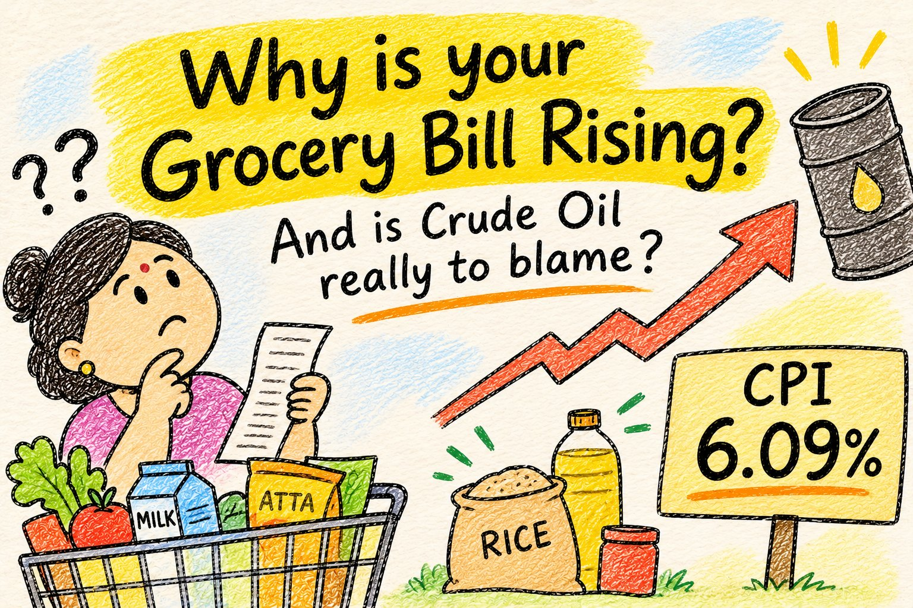

Why is your grocery bill rising, and is crude oil really to blame?
From rising onion prices to damaged crops, expensive fertilisers and the journey from farm to plate, there is much more behind India's inflation story.


- Retail inflation hit 6.09% in October, above RBI's 6% upper limit for the first time since 2024. Food inflation was 8.94%.
- Crude oil is part of the story, but not the main part. Other countries pay the same oil price and their food inflation is far lower.
- The bigger reasons are a weak monsoon, costly imported fertiliser, and a long chain from farm to plate where the farmer gets only ₹36 of every ₹100.
- For your money, this matters most if you hold a lot in FDs or live off a fixed monthly withdrawal.
The notebook
Mrs. Sathe came to our office last week with a small blue notebook. For eleven years, she has written down every monthly grocery bill. Same kirana shop in Kothrud. Same list, more or less.
She opened it to October. Last year: ₹14,200. This year: ₹16,100.
"We are buying the same things," she said. "My husband says it is petrol. Is he right?"
It was a fair question. Most of the country is asking it. So we went through the numbers properly.
The items that hurt most in her notebook were the basics of every Indian kitchen.
Onion prices have more than doubled. Garlic, ginger and lemon are up by half. When these four go up together, every dal, sabzi and chutney costs more.
What the official numbers say
In October, India's retail inflation touched 6.09%. Food inflation was 8.94%. Wholesale inflation was even higher, at 12.29%.
The government's wholesale food index now stands at 120.2. That means food that cost ₹100 at wholesale in 2022-23 now costs about ₹120.
But what do retail and wholesale inflation actually mean?
CPI and WPI, in simple words
Inflation simply means how fast prices are rising. In India, it is measured in two main ways. Think of it like this.
WPI, the Wholesale Price IndexWhen a trader buys onions in bulk at the Nashik mandi, that price is counted in WPI.
CPI, the Consumer Price IndexWhen Mrs. Sathe buys the same onions from her local vegetable seller, that price is counted in CPI.
Both compare today's prices with prices in the same month last year.
So which one should you watch? Both, but for different reasons.
WPI is an early warning. In October, wholesale fuel and power prices rose 32.84%. But the fuel and electricity families pay at home rose just 3.71%. Businesses are paying much more, and have not yet passed it all on. More price rises may still be on their way.
CPI is the number RBI acts on. Its target is 4%, with 6% as the upper limit. At 6.09%, we have crossed that limit for the first time since 2024.
How the 6.09% is worked out
Every month, the government tracks the prices of 358 items, from rice and milk to rent and school fees.
Each item is weighted by how much families spend on it. Food gets the biggest share, at 36.75%. So when food prices jump, the whole inflation number jumps.
Mrs. Sathe's notebook had risen about 13%, far more than 6.09%. That is not a mistake. Her bill is almost all food, and heavy on vegetables. The official basket also has rent, fees, phone bills and much more. Your own inflation depends on what you buy.
So what is pushing food prices up in the first place? Most people have one answer.
Suspect number one: crude oil
Mr. Sathe is not wrong. Oil matters. After the West Asia conflict began, India's crude oil basket averaged around $120 a barrel in October, its highest level since 2012. Diesel moves every truck that carries food.
But here is the catch. Oil is costly for every country, not just for us. If oil were the main reason, food prices should be rising just as fast everywhere.
To check this, we compared India with three countries. China, for its similar population. Bangladesh, as our neighbour. And Brazil, as a developing country and a big food producer.
Same oil, very different results. China's food prices are actually falling. So the real problem lies somewhere else. We found three reasons.
Reason one: the weather
This year's monsoon ended about 13% below normal, the weakest since 2015.
Even before that, unseasonal rain and hailstorms in March and April damaged Maharashtra's onion crop. Onions harvested in spring are stored and sold through the year. This time there were fewer of them, and many were damaged.
So the stored onions ran out early, while the new crop is arriving slowly. Fewer onions, same demand. Prices had only one way to go.
Reason two: fertiliser
India depends heavily on other countries for the raw material of its fertilisers.
When the West Asia conflict pushed up gas and shipping costs, fertiliser became costlier and harder to get.
The government pays a big part of the fertiliser bill, so farmers are shielded from most of the price rise. But a subsidy cannot fix a late ship. When supply is late or short, crops get less fertiliser at the right time, and harvests get smaller.
There is a third reason, and very few people are talking about it.
Reason three: the long road from farm to plate
An RBI study found that of every ₹100 you pay for onions, the farmer gets only about ₹36.
The rest goes to traders, storage, transport and shops. So when prices jump, most of the extra money stays in this middle chain, not with the farmer. Each step adds its own margin, and when supply is short, every step charges more.
The government is working on the supply side. It is selling onions it had stored earlier at ₹35 a kg. It is also running "Kanda Express" trains to carry buffer onions from Nashik to big cities, to cool wholesale prices.
And it is not just groceries
Inflation now has its foot on almost everything.
RBI itself expects inflation to stay around 6% this quarter before easing a little. Its next policy meeting is on 2 to 4 December.
What this means for your money
Mrs. Sathe's real question was not about onions. It was this: "Is our money keeping up?"
Here is the simple test. Take your FD rate, remove tax, and compare it with inflation.
The FD balance still goes up every year. But what that money can buy goes down. This is the quiet loss most families never see in their passbook.
Three practical points:
Size your safe money for higher billsIf your emergency fund was built for ₹14,000 of groceries, it may now need to cover ₹16,000. Check it once a year.
Living off a fixed monthly withdrawal? Review itAt 6% inflation, a ₹16,100 bill becomes about ₹28,800 in ten years. A withdrawal that never rises will feel smaller every year.
Long term goals need growth, not just safetyMoney you will not touch for seven years or more needs assets that can grow faster than prices, held in a planned mix.
My take
Mr. Sathe was partly right. Oil is part of the story. But if oil were the whole story, Brazil and China would be feeling what we are feeling. They are not.
India's food inflation is mostly made at home: by the sky, by imported fertiliser, and by a long chain that keeps most of every rupee before it reaches the farmer. Some of it will ease when the new crop arrives. Some of it, like the gap in wholesale fuel prices, may still reach your bills.
You cannot control onion prices. You can make sure your money is not quietly losing to them.
Atharva
Is your money beating inflation?
Send me your WhatsApp number. I'll check what your FDs, debt funds and savings really earn after tax and inflation, and tell you honestly where you stand. No spam. No calls unless you ask.
About the numbers: Inflation figures are for October 2026, year on year. Retail inflation (CPI) from the Ministry of Statistics and Programme Implementation. Wholesale inflation (WPI) and the wholesale food index (base 2022-23) from the Office of the Economic Adviser, DPIIT. Farmer's share of onion prices from an RBI study. Monsoon data from IMD. Food inflation for other countries from their national statistics offices, latest available month. Kanda Express report: India Today. The FD example assumes a 7% FD, the 30% slab and 4% cess, before surcharge.
Disclosure: This is for learning only and is not personal investment or tax advice. Mutual fund investments are subject to market risks; read all scheme related documents carefully. Mrs. and Mr. Sathe are fictional characters. Atharva, Savitr Investments, Pune. AMFI registered Mutual Fund Distributor, ARN 291687 · SEBI Authorised Person, AP0297580391.